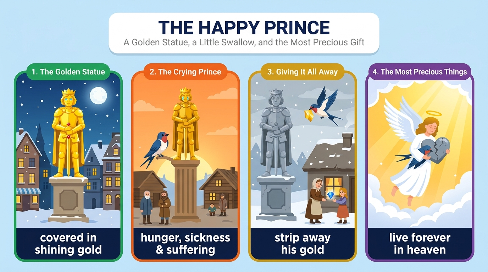

想像你全身金箔、雙眼是藍寶石，從高處看見每條街上的飢餓與苦難。
Imagine that you are a statue你請燕子把劍上的紅寶石送給生病男孩的母親，一隻眼睛給作家，另一隻給賣火柴的女孩。
one ... and the other ...雙眼已盲的你請燕子剝下金箔分給窮人；冬天來臨，燕子死去，你的心碎成兩半。
Now blind, you ask...天使把你的心帶到天堂，稱它是城裡最珍貴的東西：真正的美來自善良，而善良永存。
kindness lasts foreverImagine (V) + that 子句 (O)，主詞 you 省略。
standing high over a busy city 是分詞片語修飾 statue。
Imagine that ... 是代入文常見開頭；imagine 後接 V-ing 或 that 子句，不接 to V。
Imagine that（祈使句＋that 名詞子句）you are a statue（子句主幹）standing high over a busy city.（現在分詞片語（後位修飾））語塊 1（想像一下）➔ 語塊 2 主詞（你是一座）➔ 語塊 3（高高矗立在繁忙城市上空的，提前）➔ 雕像
祈使句 Imagine that 先翻「想像一下」，接著「你是一座……雕像」。
Imagine，右邊 you are a statue 完整 ➔ 名詞子句。standing high over a busy city 緊接名詞 statue，前面省略了 which is，是分詞片語當形容詞。
imagine + V-ing / that 子句：Imagine living on Mars.Imagine that you are...，學測作文開場可直接用。Your body (S) + is covered (V)；子句二 your eyes (S) + are (V) + two shining sapphires (C)。
Your body is covered in gold,（子句一（狀態被動））and your eyes are two shining sapphires.（子句二）語塊 1（你全身覆蓋著金箔）➔ 語塊 2（雙眼是兩顆閃亮的藍寶石）
兩個子句都是描寫，從 Your body 開始順翻。
Your body is covered in gold、右邊 your eyes are two shining sapphires，各有主詞動詞，是對等連接。shining 放在名詞前當形容詞，不是動詞。
shining / sparkling / glittering：都可形容寶石閃亮。Your + 身體部位 + is/are... 建立畫面。you (S) + can see (V) + hunger and suffering (O)。
From your high place,（位置介片）you can see（主詞＋動詞）hunger and suffering in every street.（受詞＋地點後位修飾）語塊 1（從高處）➔ 語塊 2（你看得見）➔ 語塊 3（每條街上的，提前）＋飢餓與苦難
From your high place 先翻「從高處」，接著「你看得見」。
From your high place 掛在主幹前，說明從哪裡看；in every street 緊接受詞，說明苦難在哪裡。整句只有一組主詞動詞 you can see。
every + 單數名詞：every street（✓）／every streets（×）can see：感官動詞前常加 can，中文翻「看得見、聽得到」。a tired swallow (S) + lands (V)；子句二 you (S) + ask (V) + him (O) + for help。
ask sb for sth（向某人要求某物）≠ ask sb to V（請某人做）。
One cold evening,（時間片語）a tired swallow lands at your feet,（子句一）and you ask him for help.（子句二（ask sb for sth））語塊 1（一個寒冷的傍晚）➔ 語塊 2（燕子停在你腳邊）➔ 語塊 3（你便向他求助）
時間 One cold evening 先翻，接著燕子出場：「一隻疲憊的燕子停在你腳邊」。
a tired swallow lands at your feet，右邊 you ask him for help，兩邊主詞不同，各自完整，所以是合句。for help 是介系詞片語，不是子句。
ask sb for sth：ask the teacher for advice。You (S) + tell (V) + him (O) + to take ... and bring ... (OC)。
bring it to sb：直接受詞是代名詞時，只能用 to 句型。
You tell him（tell sb to V）to take the ruby from your sword（不定詞片語一）and bring it to a sick boy's mother.（不定詞片語二（授與動詞））語塊 1（你要他）➔ 語塊 2（把劍上的紅寶石取下來）➔ 語塊 3（送給生病男孩的母親）
You tell him 先翻「你要他」，接下來是兩個動作。
tell him to take ... and bring ...：bring 前面省略了 to，和 take 一起是 tell 的受詞補語。bring it to a sick boy's mother 是授與動詞 V＋物＋to＋人，it 是代名詞，只能這樣排。
tell sb to V（指示）vs. tell sb sth（告訴某人某事）。bring it to her（✓）／bring her it（×）you (S) + give (V) + one sapphire eye (O) + to a poor writer，後接省略句。
the other to a little match girl 省略了 give 與 sapphire eye。
Then you give one sapphire eye（主幹（one））to a poor writer（授與對象）and the other to a little match girl.（省略句（the other））語塊 1（接著你把一隻藍寶石眼睛送給）➔ 語塊 2（貧窮的作家）➔ 語塊 3（另一隻送給賣火柴的小女孩）
Then 帶出下一步，先翻「接著你把一隻藍寶石眼睛送給一位貧窮的作家」。
and the other to a little match girl：and 右邊少了 you give ... sapphire eye，只留下不同的部分 the other 與 to a girl。the other 表示兩隻中剩下的那一隻。
one ... the other：兩者之一與另一個。give sth to sb＝give sb sth。you (S) + ask (V) + the bird (O) + to strip ... and share ... (OC)。
Now blind 是省略 being 的分詞構句（Adj., S + V.）。
share A with B（和 B 分享 A）；the poor＝窮人們。
Now blind,（形容詞構句）you ask the bird（主幹）to strip away your gold（不定詞片語一）and share it with the poor.（不定詞片語二）語塊 1（此時雙眼已盲的）＋語塊 2（你請小鳥）➔ 語塊 3（把金箔剝下來）➔ 語塊 4（分給窮人）
句首 Now blind 說的是你，我們合起來開頭：「此時雙眼已盲的你」。
You are now blind, and you ask the bird...：主詞相同，刪 and 與主詞，are 改 being 再省略，留下 Now blind, you ask...。and 連接 strip 與 share，兩者都是 ask 的受詞補語。
share A with B：share food with friends。Now + adj., S + V.：Now old, he still works every day.When winter comes；主句 the swallow dies＋your heart breaks。
break in two（碎成兩半）；when 子句用現在式，不寫 will come。
When winter comes,（When 時間子句）the swallow dies,（主要子句一）and your heart breaks in two.（主要子句二）語塊 1（冬天來臨時）➔ 語塊 2（燕子死去）➔ 語塊 3（你的心也碎成了兩半）
When winter comes 先翻「冬天來臨時」，再依序說兩件事。
When winter comes：When 右邊有主詞＋動詞，是時間副詞子句。the swallow dies 與 your heart breaks in two 由 and 連接，兩個都是主要子句。
When he comes, I will tell him.break / crack in two：裂成兩半。you (S) + look (V) + ugly (C)。
who once admired you 修飾 people。
Without your jewels,（Without 片語）you look ugly（連綴動詞＋補語）to the people who once admired you.（to 片語＋who 子句）語塊 1（失去了寶石）➔ 語塊 3（在曾經欣賞你的人眼中，提前）➔ 語塊 2（你顯得醜陋）
Without your jewels 先翻「失去了寶石」。
the people。往右看：once admired you 缺主詞 ➔ 主格關代子句修飾 people。look ugly 的 ugly 是補語形容詞，不能寫成 uglily。
look / seem / sound / feel + adj.admire：欣賞、仰慕；admiration（n.）。an angel (S) + carries (V) + your heart (O) + to heaven。
, where it is called ... 是非限定關係副詞子句，補充說明 heaven。
Yet an angel carries your heart to heaven,（主幹）where it is called（非限定 where 子句）the most precious thing in the city.（補語（最高級））語塊 1（然而天使把你的心帶到天堂）➔ 語塊 2（在那裡它被稱為）➔ 語塊 3（城裡最珍貴的東西）
Yet 表轉折，先翻「然而」，接著主幹「一位天使把你的心帶到了天堂」。
heaven。往右看：it is called the most precious thing 主詞動詞齊全 ➔ 關係副詞 where（＝in which），不是關代 which（which 後面會缺主詞或受詞）。逗號表示非限定補充。
where = in / at which：the town where I grew up。Yet 放句首表轉折，語氣比 But 正式。Would you do (V) + the same (O)，接 if 條件子句。
had lived＋對現在的推想 would do（混合假設）。
without any worries 修飾 lived in a palace。
Would you do the same（假設主句（疑問））if you had once lived in a palace（if 條件子句（與過去相反））without any worries?（介片修飾）語塊 2（如果你曾經，提前）＋語塊 3（無憂無慮地）＋住在宮殿裡 ➔ 語塊 1（你還會做同樣的事嗎？）
這句主句在前、條件在後，中文要倒過來，從 if 子句開始翻。
if you had once lived in a palace：if 右邊用 had lived（過去完成），表示「假設過去曾……」；主句 Would you do the same? 用 would＋原形，問的是「現在會不會」。這種前後時間不同的叫混合假設。
If + had p.p., S + would + V.Remember (V) + that 子句 (O)。
come from（來自）；last forever（永遠持續），last 是動詞。
Remember that（祈使句＋that）real beauty comes from kindness,（名詞子句一）and kindness lasts forever.（名詞子句二）語塊 1（記住）➔ 語塊 2（真正的美來自善良）➔ 語塊 3（而善良永遠長存）
Remember that 先翻「記住」，後面是一個道理。
Remember，右邊 real beauty comes from kindness, and kindness lasts forever 是完整內容 ➔ 名詞子句。子句內 and 連接兩個小句。last 在這裡是動詞「持續」。
last（v.）持續：The meeting lasted two hours.Real beauty comes from kindness.1. 請選出最適合填入 (1) 的字：
Imagine。2. 請選出最適合填入 (2) 的字：
suffering。3. 請選出最適合填入 (3) 的字：
the other。4. 請選出最適合填入 (4) 的字：
Now blind, you ask...：Adj., S + V.，being 省略。5. 請選出最適合填入 (5) 的字：
where。6. My grandmother's ring is very ________ to me because it reminds me of her.
precious。7. The knight pulled out his ________ and got ready to fight.
sword（劍）。8. When you feel lost, don't be afraid to ask your teachers ________ help.
ask sb for help：向某人求助。9. Kindness is like a light that can ________ forever in people's hearts.
last（持續）。10. 下列哪一句文法正確？
imagine + V-ing，不接 to V。11. 「如果你曾經住在宮殿裡，你還會幫助窮人嗎？」最佳英譯是：
had + p.p.，主句用 would + V；the poor 不加 s。12. 下列哪一句文法正確？
13. What is the purpose of using "you" in this article?
14. What happens after the prince becomes blind?
15. Which sentence best states the main idea?